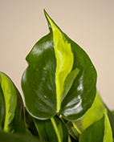

Philodendron Brazil
$26
Size:
Description
The Philodendron Brazil, known for its striking and vibrant foliage, is a popular tropical houseplant that effortlessly adds a touch of lively elegance to any indoor space. Characterized by its heart-shaped leaves featuring a captivating blend of deep green and vivid yellow tones, this Philodendron variety stands out as a visually stunning and resilient addition to plant collections.